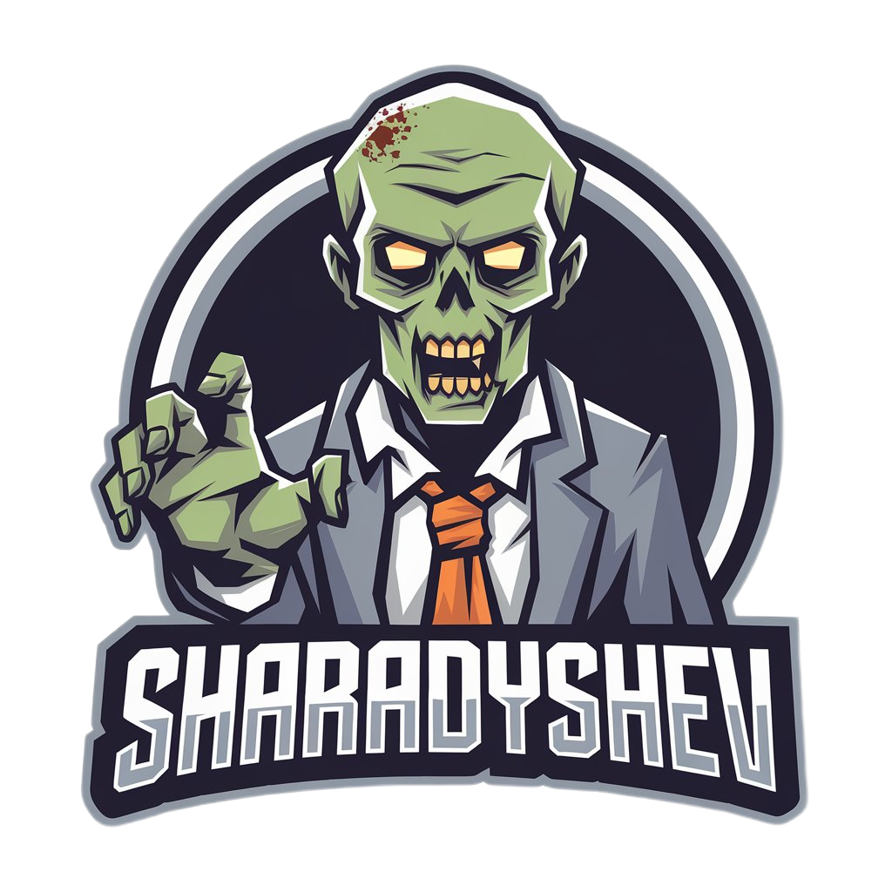

Task-Manager для зомби
Где достать мозги?
Описание приложения
Добро пожаловать в Task-Manager для Зомби — уникальное приложение, созданное для зомби, которые стремятся организовать свои неумолимые и голодные дни! Наше приложение помогает зомби эффективно управлять своими задачами, будь то поиск свежей жертвы, сбор сородичей или планирование следующего нападения.
Основные особенности:
- 🧠 Умный планировщик задач: Легко добавляйте и сортируйте задачи, используя простой и интуитивно понятный интерфейс.
- 🔄 Совместимость с другими зомби: Создавайте группы и делитесь задачами с другими зомби, чтобы синхронизировать свои усилия.
- 📊 Аналитика "Харизмы": Следите за прогрессом выполнения задач и получайте аналитику по эффективности вашего зомби-коллектива.
- 🏆 Достижения зомби: Зарабатывайте достижения за выполнение задач и активное участие в жизни зомби-сообщества.
- 🌌 Ночной режим: Удобный интерфейс для действий в темноте.
Используйте Task-Manager для Зомби сегодня и дайте своим мертвым дням новый смысл!